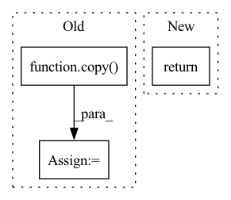

Pattern ID :29419

Before Change
diff_1 = copy(diff)
diff_2 = copy(diff)
diff_3 = copy(diff)
diff_4 = copy(diff)
if mode == "f":
diff_3[axis] = diff_3[axis] + 2
diff_2[axis] = diff_2[axis] + 1
elif mode == "b":
diff_3[axis] = diff_3[axis] - 2
diff_2[axis] = diff_2[axis] - 1
elif mode=="central":
diff_4[axis] = diff_4[axis] + 2
diff_3[axis] = diff_3[axis] + 1
diff_2[axis] = diff_2[axis] - 1
diff_1[axis] = diff_1[axis] - 2
After Change
diff_2[axis] = diff_2[axis] - 1
else:
print("Wrong mode")
return [diff_3, diff_2, diff_1]
def second_order_scheme_build(axes, varn, axes_mode):
In pattern: SUPERPATTERN
Frequency: 3
Non-data size: 3
Instances
Fragment ID: 87132803
Project Name: itmo-nss-team/torch_de_solver
Commit Name: e7d16a3e5c17a6661afc3e4f16c5cbaf6600a78e
Time: 2022-01-25
Author: heretik.unlimited@gmail.com
File Name: finite_diffs.py
M Class Name: AnonimousClass
N Class Name: AnonimousClass
M Method Name: second_order_shift(3)
N Method Name: second_order_shift(3)
M Parent Class:
N Parent Class:
M File Name: finite_diffs.py
N File Name: finite_diffs.py
M Start Line: 263
M End Line: 278
N Start Line: 263
N End Line: 274
'>
Before Change
diff_1 = copy(diff)
diff_2 = copy(diff)
diff_3 = copy(diff)
diff_4 = copy(diff)
if mode == "f":
diff_3[axis] = diff_3[axis] + 2
diff_2[axis] = diff_2[axis] + 1
elif mode == "b":
diff_3[axis] = diff_3[axis] - 2
diff_2[axis] = diff_2[axis] - 1
elif mode=="central":
diff_4[axis] = diff_4[axis] + 2
diff_3[axis] = diff_3[axis] + 1
diff_2[axis] = diff_2[axis] - 1
diff_1[axis] = diff_1[axis] - 2
After Change
diff_2[axis] = diff_2[axis] - 1
else:
print("Wrong mode")
return [diff_3, diff_2, diff_1]
def second_order_scheme_build(axes, varn, axes_mode):
'>
Fragment ID: 87132805
Project Name: itmo-nss-team/torch_de_solver
Commit Name: c414e680ef7bf67be8e34b17d04f39bfba51a77f
Time: 2022-01-24
Author: heretik.unlimited@gmail.com
File Name: finite_diffs.py
M Class Name: AnonimousClass
N Class Name: AnonimousClass
M Method Name: second_order_shift(3)
N Method Name: second_order_shift(3)
M Parent Class:
N Parent Class:
M File Name: finite_diffs.py
N File Name: finite_diffs.py
M Start Line: 263
M End Line: 278
N Start Line: 263
N End Line: 274
'>
Before Change
def movement_op(self:LazyBuffer, op:MovementOps, arg) -> LazyBuffer:
// TODO: look into why that copy is needed
arg = tuple(copy(arg))
local_st = ShapeTracker(self.shape).movement_op(op, arg)
// instant nops
After Change
def movement_op(self:LazyBuffer, op:MovementOps, arg : Tuple[Any, ...]) -> LazyBuffer:
// very instant nop
if op == MovementOps.RESHAPE and self.shape == arg: return self
// TODO: look into why that copy is needed
local_st = ShapeTracker(self.shape).movement_op(op, arg)
'>
Fragment ID: 87132804
Project Name: geohot/tinygrad
Commit Name: aebe75d9a29fa12a55ee2022ed7b21f7956016f8
Time: 2023-02-07
Author: 72895+geohot@users.noreply.github.com
File Name: tinygrad/lazy.py
M Class Name: LazyBuffer
N Class Name: LazyBuffer
M Method Name: movement_op(3)
N Method Name: movement_op(3)
M Parent Class:
N Parent Class:
M File Name: tinygrad/lazy.py
N File Name: tinygrad/lazy.py
M Start Line: 175
M End Line: 177
N Start Line: 174
N End Line: 177